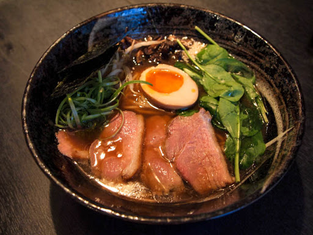
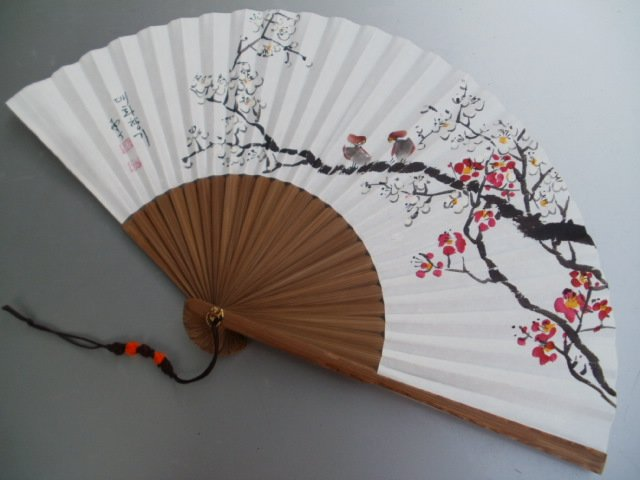

Największe atrakcje w Japonii
Japonia słynie z wielu rzeczy. Wszyscy znają ją za pandy, bambus, zieloną herbatę , sushi, ramen oraz kimona. Ta jednak posiada o wiele więcej ciekawycj rzeczy. W kraju Japonii spotkać możemy naprawdę wiele pięknych rzeczy. Jedną z nich jest sezon kwitnięcia
wiśni. Wszystkie drzewa są wtedy przepięknego różowego koloru.
W Japonii jest wiele do zwiedzania. Najbardziej popularne miejsca w tym kraju to: Góra Fudżi, złota świątynia Kinkaku-ji, Fushimi Inari-Taisha(tam znajdują się słynne bramy), Arashiyama czyli obszar z parkiem małp oraz las bambusowy, zabytkową świątynię
bogini miłosierdzia Sensō-ji oraz Tokyo Tower. Zdjęcia znajdują się w galerii.

Japonia posiada też wiele ciekawych dań oraz miejsc gdzie można coś zjeść. Jedną z rzeczy której każdy powinien spróbować jest słynne japońskie sushi. Powinno się zjeść także Chirashi, Ramen, udon, sobę, onigiri, matchę, tempurę, mochi, okonomyiaki, takoyaki,
yakitori, yakisobę, pierożki gyaoza, wołowinę wagyu i wiele innych. Nie zapominajmy też o japońskiej herbacie.

W Japonii można znaleźć bardzo wiele pamiątek. Pamiątki czają się nas na prawie każdym rogu. Dzięki temu mamy naprawdę dużo do wyboru. Rzeczy obowiązkowa do zakupienia w Japonii to wachlarz, kimono, pałeczki, mangę oraz przeróżne jedzenie. Jeśli jednak
kogoś jednak nie interesują tego typu rzeczy zawsze może poszukać czegoś innego. Jeśli jest na przykład fanem japońskich kreskówek może znaleźć bardzo dużo oficjalnych japońskich gadżetów i inych towarów.